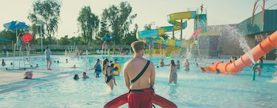
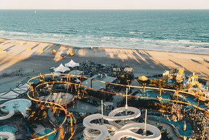
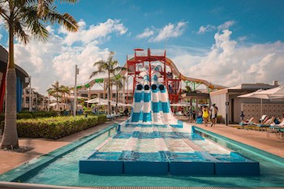

The Water Slides!

Photo by Kenny Eliason on Unsplash
The first water slide is enclosed, which means it's time for a tube! Your in for the ride of a lifetime while you travel outside of the building (yes, you read that right)! The second water slide, which is a bit slower, stays indoors for those who aren’t quite up for a thrilling ride—and it's no tube necessary. The third slide is like a mini ‘Point of No Return’, (if you don’t know what I’m talking referring to, then you should definitely add Noah’s Ark to your summer bucket list too)!
The Lazy River

Photo by Ethan Hoover on Unsplash
If you love floating down the Chippewa River, but you can’t wait for the warm weather to return, then the Chaos lazy river is calling YOUR name! The lazy river is extremely relaxing, and makes up almost half of the water park, you will definitely be feeling calm and composed by the end of your float! Oh, and did we mention that there’s a DOUBLE hot tub?!
It’s Perfect for a Party

Photo by Meg von Haartman on Unsplash
Chaos has cute, cozy cabanas, equipped with tables and chairs, where you can host a party. You can reserve one (or all) of the cabanas ahead of time; so, why not go there for your child’s next birthday party or to celebrate the end of finals with a few friends? Order a pizza or two for the group, go for a little float or an exhilarating ride and have some fun!